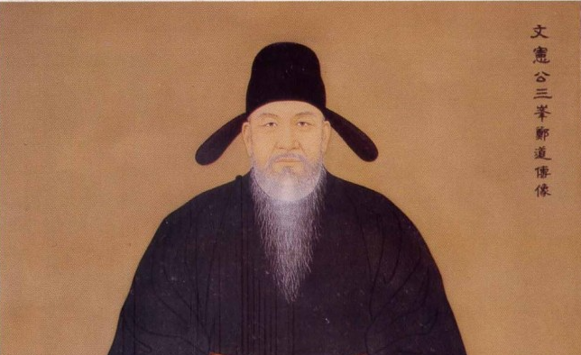

💡 한자(鄭道傳)는 안 써도 됨. 한글 이름과 출생·사망 연도 두 숫자만 정확히 쓰면 만점.
덧붙여 알아두면 좋은 정보
호
삼봉(三峰)
출생지
경상북도 봉화
시대 구분
고려 말 → 조선 건국기 (여말선초)
별명
"조선의 설계자"
주요 저서
『조선경국전』 『경제문감』 『불씨잡변』 『삼봉집』
사망 원인
1398년 1차 왕자의 난 — 이방원(태종)에게 피살
Q2 시대 문제 3점158자 / 공백제외 122자
📝 모범 답안
고려 말 권문세족은 대농장을 점유하여 토지를 겸병하였고, 불교 사원도 토지와 노비를 독점하여 국가 재정이 파탄에 이르렀다. 원의 간섭으로 왕권은 약화되었고, 왜구와 홍건적의 침입으로 민생은 피폐해졌다. 정도전은 이러한 고려의 위기는 새 나라 건국 없이는 해결할 수 없다고 판단하였다.
⚠️ 학교에 따라 글자 수 기준이 다를 수 있음:
• 공백 포함: 158자 (원고지 칸 수 기준)
• 공백 제외: 122자 (글자만 셀 때)
→ 두 기준 모두 120~160자 범위 안에 들어옴 ✅
핵심 키워드 (꼭 들어가야 할 단어)
권문세족대농장불교 사원토지·노비 독점국가 재정 파탄원 간섭기왕권 약화왜구·홍건적민생 피폐새로운 나라
문장별 분석
문장
역할
고려 말 권문세족은 대농장을 점유하여 토지를 겸병하였고, 불교 사원도 토지와 노비를 독점하여 국가 재정이 파탄에 이르렀다.
① 토지·재정 문제 (가장 핵심)
원의 간섭으로 왕권은 약화되었고, 왜구와 홍건적의 침입으로 민생은 피폐해졌다.
② 정치·외침 문제
정도전은 이러한 고려의 위기는 새 나라 건국 없이는 해결할 수 없다고 판단하였다.
③ Q3과 연결되는 마무리
Q3 개혁안 설명 3점156자 / 공백제외 122자
📝 모범 답안
정도전은 과전법을 실시하여 경기 토지를 관리에게 수조권으로 지급하고 사망 시 반납하게 해 토지 겸병을 억제하였다. 또한 사병을 혁파해 군사권을 일원화하고, 재상 중심 정치를 주장하여 왕의 독단을 견제하였다. 『불씨잡변』으로 불교 폐단을 비판하고 성리학을 통치 이념으로 확립하였다.
⚠️ 단답형("과전법 실시")은 절대 금지! 반드시 "경기 토지 + 수조권 + 사망 시 반납"까지 풀어 써야 한다.
• 공백 포함: 156자 / 공백 제외: 122자 → 두 기준 모두 OK ✅
핵심 키워드
과전법경기 토지수조권사망 시 반납토지 겸병 억제사병 혁파군사권 일원화재상 중심 정치왕권 견제『불씨잡변』불교 폐단성리학통치 이념
문장별 분석
문장
역할
정도전은 과전법을 실시하여 경기 토지를 관리에게 수조권으로 지급하고 사망 시 반납하게 해 토지 겸병을 억제하였다.
① 토지 개혁 (가장 중요, Q2의 토지 문제와 직접 연결)
또한 사병을 혁파해 군사권을 일원화하고, 재상 중심 정치를 주장하여 왕의 독단을 견제하였다.
② 군사·정치 개혁 (왕권 약화·국방 위기와 연결)
『불씨잡변』으로 불교 폐단을 비판하고 성리학을 통치 이념으로 확립하였다.
③ 이념 개혁 (Q2의 불교 폐단과 연결)
💡 Q2와 Q3은 짝꿍! Q2에서 "토지/불교/왕권" 문제를 지적했으면, Q3에서 "과전법/불씨잡변/재상정치"로 답하는 구조.
Q4 나만의 개혁안 7점⭐ 최고 배점
당대 문제를 해결하기 위한 자신만의 개혁안 2가지. 각 개혁안마다 문제인식 → 해결책 → 기대효과 3단 구조로!
1 국가 공교육 제도 도입
① 문제 인식
고려 말 학문과 교육은 권문세족 같은 특권층에게만 허용되었다. 능력 있는 평민이나 하층민은 공부할 기회조차 없었기 때문에, 결국 무능한 귀족이 관직을 차지하고 나라가 부패하는 악순환이 반복되었다.
② 나의 해결책
나라면 신분에 관계없이 누구나 다닐 수 있는 국립 학교를 전국 각 고을에 설치하겠다. 가난한 학생은 국가가 학비와 식비를 지원하고, 일정 수준 이상의 성적을 거두면 신분과 관계없이 과거 시험에 응시할 수 있게 하겠다.
③ 기대 효과
능력 있는 인재가 신분의 벽 없이 발탁되어 관직에 오를 수 있다. 이를 통해 국가 전체의 행정 능력이 강화되고, 백성에게도 자신의 노력으로 신분을 상승시킬 길이 열려 사회 불평등이 줄어든다.
🔗 Q2와의 연결: Q2에서 "권문세족이 모든 자원을 독점했다"고 썼다면, 그 독점을 깨는 개혁으로 자연스럽게 연결됨.
2 종교 단체 재산 상한 법제화
① 문제 인식
불교 사원이 무제한으로 토지와 노비를 소유하면서 국가 재정이 파탄에 이르렀다. 사원의 토지는 세금이 면제되었기 때문에, 사원이 커질수록 국가 수입은 줄어들고 백성의 세금 부담은 더욱 가중되었다.
② 나의 해결책
나라면 종교 기관이 소유할 수 있는 토지와 재산에 법으로 상한선을 정하겠다. 상한을 넘는 토지는 국가가 환수하여 가난한 백성에게 나누어 주거나, 군사비와 빈민 구제에 사용한다. 또한 일정 규모 이상의 사원에는 세금을 부과한다.
③ 기대 효과
국가 재정이 회복되고, 토지를 잃은 농민이 다시 자기 땅에서 일할 수 있게 된다. 종교의 자유는 보장되면서도 종교가 정치·경제를 좌우하지 못하게 되어, 국가와 종교의 역할이 명확히 분리된다.
🔗 정도전의 개혁(불교 비판)을 한 단계 발전시킨 개혁안. "비판"을 넘어 "법으로 제한"하는 구체적 실행안.
💡 작성 팁
각 개혁안은 3~5문장이면 충분. 위 모범 답안은 분량이 다소 많은 편이니, 시험장에서는 핵심만 추려서 쓰면 된다.
⚠️ 위 모범 답안 그대로 베끼면 안 됨. 구조(문제→해결책→효과)와 핵심 아이디어(공교육·종교 재산 상한)만 가져가서 자기 말로 다시 쓰기.
Q5 선거 포스터 5점
아래 포스터 디자인을 PPT/Canva에서 그대로 따라 만들면 됨. 디지털 제작 허용.
📌 모범 포스터 (참고용)
기호 1번

정도전
鄭道傳 · 호 삼봉 · 1342~1398
삼봉개혁당
1
토지를 일하는 농민에게!
과전법 전국 확대 — 권문세족 불법 농장 환수
2
법 앞에 모두가 평등!
재상 책임제 — 왕도 법 위에 있지 않다
★ 새 나라, 새 정치 — 조선의 설계자 ★
💡 위 정도전 초상은 정도전_초상.png 파일. PPT/Canva에 그대로 가져다 쓰거나, 정도전_초상화.jpg(다른 버전)도 활용 가능.